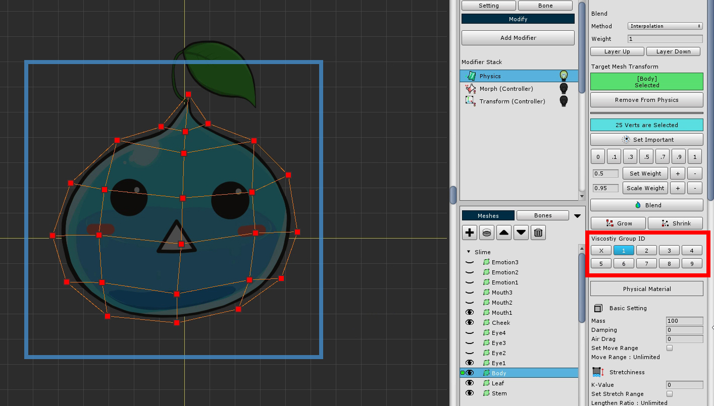
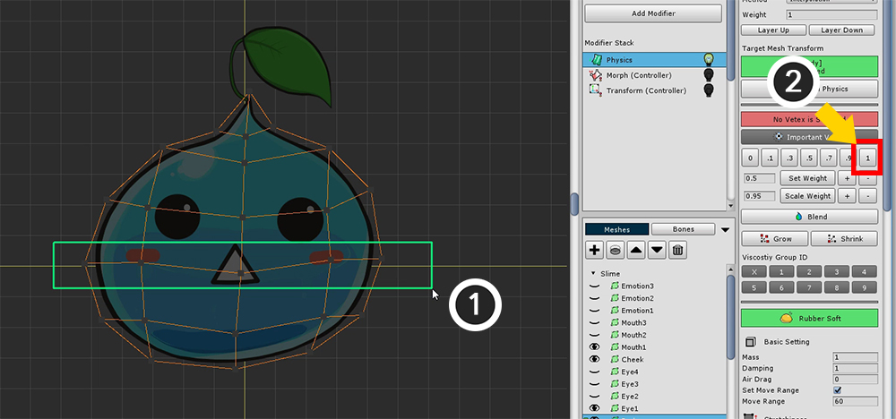
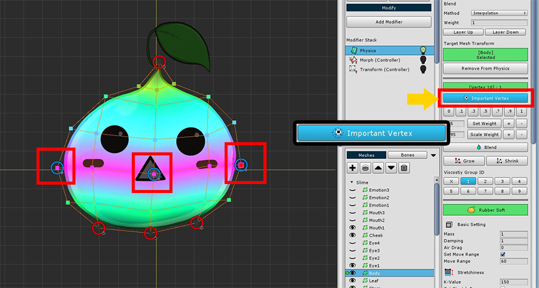

AnyPortrait > 시작하기 > 1.9. 물리 효과 추가하기
1.9. 물리 효과 추가하기
1.0.0
모디파이어 중에는 물리 효과를 주는 것이 있습니다.
장력과 관성 등을 표현하여 재미있는 효과를 추가할 수 있습니다.
물리 효과를 설정하기 위해서는 이론을 알고 여러가지 설정을 해야겠지만,
이 페이지에서는 미리 만들어진 물리 재질을 적용하여 쉽게 효과를 주는 법을 배워보겠습니다.

Physic 모디파이어를 추가합니다.

물리 효과를 설정하기 전에 먼저 작업 영역에서 물리 효과가 적용되지 않도록 합니다.
(1) 화면 상단의 물리 효과 설정을 켜거나 끌 수 있습니다.
(2) 슬라임 몸통에 해당하는 메시를 선택한 뒤에 (3) Add to Physics 버튼을 누릅니다.

Start Editing 버튼을 눌러서 편집 모드를 켭니다.
편집 모드를 켠 상태에서 버텍스 가중치를 수정할 수 있습니다.

물리 재질을 설정하기 전에 모든 버텍스를 선택한 뒤, 점성 그룹(Viscosity Group)의 ID를 1로 지정해줍니다.
점성 그룹 ID를 공유하는 버텍스 간에 점성력이 적용되기 때문입니다.

물리 재질 설정을 하는 것은 어려운 작업입니다.
여기서는 미리 만들어진 프리셋을 선택해보겠습니다.
우측 UI를 내려보면 물리 프리셋(Physics Presets) 버튼이 있습니다. 이를 눌러서 물리 프리셋 다이얼로그를 엽니다.
물리 프리셋 다이얼로그의 화면 구성은 다음과 같습니다.
1. 현재 물리 설정을 프리셋으로 저장 : 선택되어있는 메시의 물리 설정값을 프리셋으로 저장합니다. 이름과 아이콘을 지정하고 저장할 수 있습니다.
2. 물리 프리셋들 : 기본적으로 만들어졌거나 사용자가 추가한 물리 프리셋들입니다.
3. 선택된 물리 프리셋의 값 : 선택된 물리 프리셋의 상세 설정입니다. 여기서 수정은 안되며, 사용자가 추가한 프리셋은 삭제 가능합니다.

슬라임과 비슷한 재질인 "부드러운 고무(Rubber Soft)" 재질을 선택해서 적용합니다.

물리 재질이 적용되면 위 화면과 같이 설정됩니다.
이 페이지에서는 간략하게 화면 구성에 대해서만 설명합니다.
1. Set Important : Important 설정이 적용된 버텍스를 중심으로 효과가 적용됩니다.
2. 가중치 툴 : 물리 효과를 얼마나 받을지 가중치를 지정하는 툴입니다. 0~1의 값을 가집니다.
3. Blend : 주면 버텍스의 가중치를 바탕으로 부드럽게 만드는 기능입니다.
4. Grow / Shrink : 더 많은 버텍스를 선택하거나 제외하는 기능입니다.
5. 점성 그룹 ID : 점성력 계산을 위한 점성 ID를 지정합니다. 1~9의 값을 가지며 중복 가능합니다.
6. 물리 재질 설정 : 물리 재질의 값입니다. 질량, 공기 저항, 장력, 관성, 복원력, 점성력의 값을 가집니다.
7. 중력과 바람 : 중력과 바람을 설정할 수 있습니다. 고정값으로 지정할 수도 있고, 컨트롤 파라미터의 값을 이용할 수도 있습니다.
8. 물리 프리셋(Physics Presets) : 미리 설정된 물리 프리셋 다이얼로그를 열어서 프리셋을 열거나 저장할 수 있습니다.


(1) 중앙의 버텍스들을 선택한 뒤, (2) 가중치를 1로 지정합니다.


(1) 위, 아래의 끝점들을 제외하고 나머지 버텍스들을 선택합니다.
(2) Blend 버튼을 몇번 눌러서 가중치를 적당히 지정합니다.

가중치가 너무 작거나 크다면 가중치 툴을 이용하여 증감할 수 있습니다.

중간의 몇개의 버텍스를 선택하여 Set Important 버튼을 누릅니다.
Important 설정이 붙은 버텍스를 중심으로 물리 효과가 발생합니다.

설정된 물리 효과가 제대로 작동하는지 확인해봅시다.
(1) 물리 효과를 다시 켜고 제대로 적용되는지 확인해봅니다.
(2) 화면 하단에 물리 테스트를 위한 Wind On/Off 버튼이 있습니다. 이를 눌러서 테스트해봅시다.